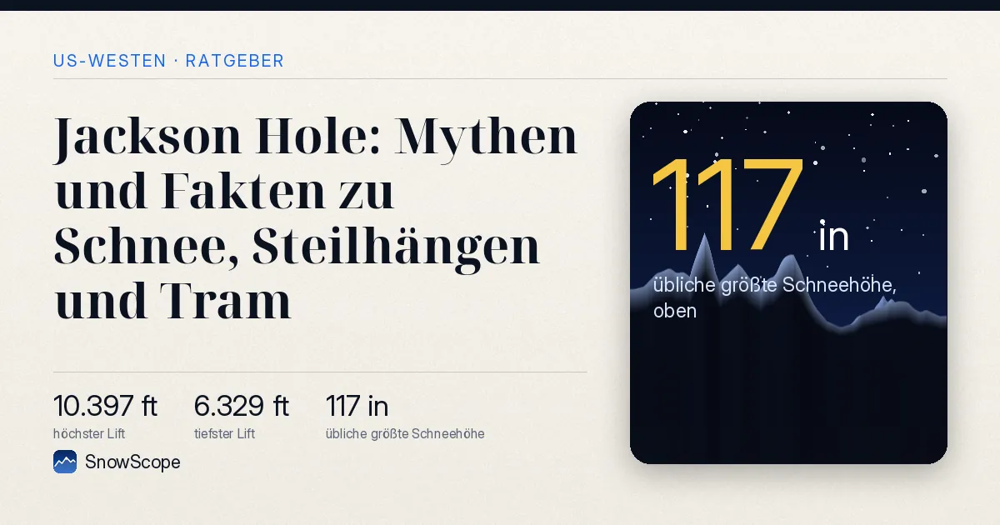

Jackson Hole: Mythen und Fakten zu Schnee, Steilhängen und Tram
Jackson Hole Mountain Resort hat einen Ruf, der teils Mythos, teils Fakt ist. Wir haben sechs verbreitete Aussagen gegen die veröffentlichten Pisten und 46 Winter Schneetiefen-Aufzeichnungen überprüft, um zu trennen, was wahr ist und was nicht.
Die Live-Schneeprognose für Jackson Hole Mountain Resort in der SnowScope-AppSchneehöhen, Pulverschnee-Alarme und 3D-Karte, gratis.

Mythos: Jackson Hole ist nur für Experten
Fakt: Steilhänge prägen das Resort tatsächlich. Mit einem Höhenunterschied von 1.240 m (4.100 ft) und 78 km (49 miles) Pisten ist der Berg für seine Anforderungen bekannt. Aber nur Experten können dort fahren.
Die unteren Hänge nahe der Talstation auf 1.929 m (6.329 ft) haben sanftere Pisten für Anfänger und vorsichtige Fortgeschrittene. Im mittleren Bereich um 2.549 m (8.363 ft) gibt es ein breiteres Angebot. Die ehrliche Antwort: Fortgeschrittene finden hier gute Tage, sollten aber damit rechnen, ihre Strecken sorgfältig zu planen und nicht davon auszugehen, dass ein ganzer Tag leichte Cruising-Pisten bietet.
Mythos: Der Schnee ist vor dem Frühling weg
Fakt: Der hohe Berg hält Schnee viel länger, als viele erwarten. Die Saison-Spitze liegt normalerweise im April auf den oberen Höhen nahe 3.169 m (10.397 ft), mit einer typischen Tiefe von 267 cm (105 in). Im mittleren Bereich um 2.549 m (8.363 ft) sind im April immer noch 169 cm (67 in) vorhanden.
Die unteren Hänge nahe 1.929 m (6.329 ft) sind anders: Sie erreichen nur 116 cm (46 in) und tauen zuerst auf. Aber wenn du in die Höhe fährst, kannst du bis Ende Mai oben fahren. Die Daten vergangener Winter zeigen, dass Schnee oben normalerweise Anfang Oktober kommt und bis Ende Juni bleibt.
Mythos: Der Klimawandel hat den Berg leergeräumt
Fakt: Der Schnee im mittleren Bereich ist über die 46-Jahres-Aufzeichnung stabil geblieben. Die typische Spitzentiefe in den ersten 15 Wintern war 203 cm (80 in); in den letzten 15 Wintern sind es 205 cm (81 in). Der obere Gipfel ist leicht gesunken, von 297 cm (117 in) auf 285 cm (112 in), aber beide bleiben solide.
Was sich geändert hat, ist die Zahl der Tage mit Schnee am Boden. Im mittleren Bereich fiel sie von 250 Tagen in den frühen Jahrzehnten auf 239 in den letzten Jahren. Der letzte Winter 2025-26 erreichte im mittleren Bereich 162 cm (64 in), unter dem Durchschnitt. In 9 von 10 Wintern hat der mittlere Bereich mindestens 50 cm (20 in) für 22 Wochen der Saison.
Mythos: Corbets Couloir ist der Hauptgrund zu kommen
Fakt: Corbets Couloir ist die berühmteste und schwierigste Linie auf dem Berg, und die meisten Besucher sehen sie nur aus der Ferne. Der stärkere Grund zu kommen ist die Breite des Geländes, die nach Stürmen auf mehreren Höhen Schnee hält.
Die 100er-Personenbahn zum Gipfel, die am 20. Dezember 2008 eröffnet wurde, bringt viele Skifahrer in einer Fahrt zu den hohen Gipfeln. Von dort aus bedeutet eine Reihe von Hängen in verschiedenen Winkeln, dass du Fahrbedingungen passend zum Schnee und Wetter des Tages finden kannst.
Mythos: Teton Village liegt in der Stadt Jackson
Fakt: Teton Village liegt etwa 19 km (12 miles) nordwestlich von Jackson town. Jackson Hole Airport liegt etwa 18 km (11 miles) nordöstlich des Villages. In Teton Village zu bleiben bedeutet, direkt an den Liften zu sein; in Jackson zu bleiben gibt mehr Auswahl bei Restaurants und Unterkunft, mit einer Fahrt oder Bus jeden Morgen.
Mythos: Das Backcountry-Tor bedeutet, das Gelände ist sicher
Fakt: Das Resort hat etwa 1.215 acres gekennzeichnetes Backcountry hinter seiner Grenze. Ein Tor markiert die Kante des kontrollierten Geländes. Hindurchzugehen bedeutet, du betrittst Lawinengelände.
Bevor du losgeht, lese die tägliche Prognose des Bridger-Teton Avalanche Centers. Trage einen Sender, eine Sonde und einen Schaufel. Fahre mit Partnern, die das Gelände kennen. Backcountry-Zugang ist ein Privileg; die Lawinenwarnungen sind dein Guide.
Tipps für Skifahrer
- Fortgeschrittene können in Jackson Hole fahren: Plane deine Strecken rund um die sanfteren unteren und mittleren Hänge.
- Für das tiefste Schneepaket zielen auf Februar bis April; die hohen Gipfel halten am meisten.
- Bleibe in Teton Village, wenn du zu den Liften laufen möchtest; Jackson bietet mehr Auswahl, wenn du fahren wirst.
- Dezember baut Schnee langsam auf allen Höhen auf; Januar bis März sind die zuverlässigsten Monate.
- Überquere niemals ein Backcountry-Tor ohne die Bridger-Teton Avalanche Center Prognose zu checken und Rettungsausrüstung zu tragen.
Zu diesen Zahlen
Die Schneehöhen der Skigebiete sind der meiste Schnee in den oberen Hängen am angegebenen Tag; es sind Schätzungen für eine Fläche, keine Messung an einem Punkt. Prognosen können sich ändern. Lies vor dem Freeriden immer den offiziellen Lawinenlagebericht.
Offizielle Lawinenlageberichte: Bridger-Teton Avalanche Center
Diesen Bericht zitieren
Für Forschung, Lehre oder Presse: Zahlen und Grafiken sind unter CC BY 4.0 mit dieser Quellenangabe frei nutzbar.
SnowScope (2026), Jackson Hole: Mythen und Fakten zu Schnee, Steilhängen und Tram, https://snowscope.app/blog/de/2026/11/jackson-hole-ski-myths-and-facts.html, abgerufen am 2026-11-09
SnowScope (Atlas Labs). (2026, November 9). Jackson Hole: Mythen und Fakten zu Schnee, Steilhängen und Tram. SnowScope snow reports. https://snowscope.app/blog/de/2026/11/jackson-hole-ski-myths-and-facts.html
BibTeX
@misc{snowscope2026jacksonholeskimythsandfa,
author = {{SnowScope (Atlas Labs)}},
title = {Jackson Hole: Mythen und Fakten zu Schnee, Steilhängen und Tram},
year = {2026},
month = nov,
howpublished = {\url{https://snowscope.app/blog/de/2026/11/jackson-hole-ski-myths-and-facts.html}},
note = {Published 2026-11-09 20:02 UTC; accessed 2026-11-09}
}· CC BY 4.0 · Methoden, Daten und Werkzeuge →
Jackson Hole Mountain Resort folgen
Gratis: eine Nachricht, wenn Neuschnee kommt, und jeden Morgen die Vorhersage.